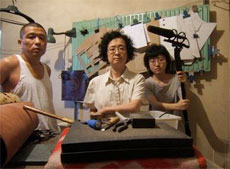

|
NIU PI ER (Oxhide 2)
Jiayin Liu | China 2009 | 132 Min.
Material: DV
Format: DigiBEta
Originalsprache: Mandarin
Buch: Jiayin Liu
Kamera: Jiayin Liu
Schnitt: Jiayin Liu
Ton: Jiayin Liu
Mit Huifen Jia, Jiayin Liu, Zaiping Liu
Produktion: Jiayin Liu
Vertrieb: Jiayin Liu
Dumplingkochen in Echtzeit. Wie schon in OXHIDE 1 spielt die Familie der Regisseurin sich selbt: Gemeinsam machen sich Vater, Mutter und Tochter, mit Hackfleisch und Gemüse gefüllte Teigtaschen zuzubereiten. Die Kamera zeigt in neun Einstellungen die Arbeitsprozesse und rückt dabei, streng streng mathematisch, in 45°-Winkeln um den Tisch herum. Jiayin Liu hat auch hier die Dialoge im Skript vorgeschrieben. Das alltägliche Gespräch über die Aufgabenteilung, die wie nebenbei zur Sprache kommende schwierige Situation des elterlichen Geschäfts sind dramaturgische Eckpunkte in der sich meist wortlos und durch Gesten mitteilenden Familiengeschichte. Aber nichts ist selbstverständlich: Schon das Zerschneiden des Lauchs führt zu innerfamiliären Spannungen, die Tochter vermisst das Gemüse schließlich mit dem Lineal. Der familiäre Terror beginnt, wenn der Teig in Dumplingform geknetet werden muss: Ein auch selbstironischer Blick auf die unterschwelligen Obsessionen einer Familie in China.
Liu Jiayin, geb. 1981 in Peking. Seit 1999 studiert sie an der Filmakademie in Beijing; ihr Hauptfach ist Drehbuch-schreiben. 2002 entstand ihr erster Kurzfilm, THE TRAIN.
Filme: Niu pi er 2009 | Niu pi 2005 (UNDERDOX 05)
zurück
|